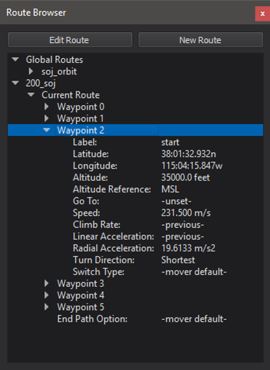
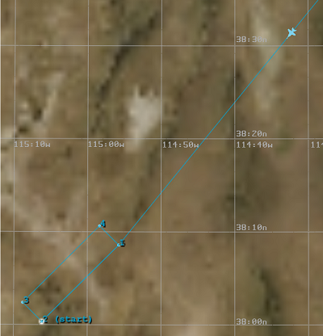
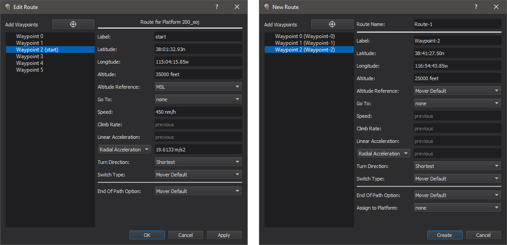
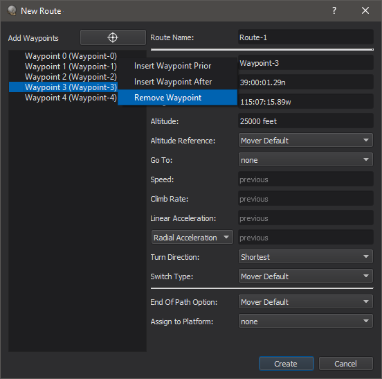
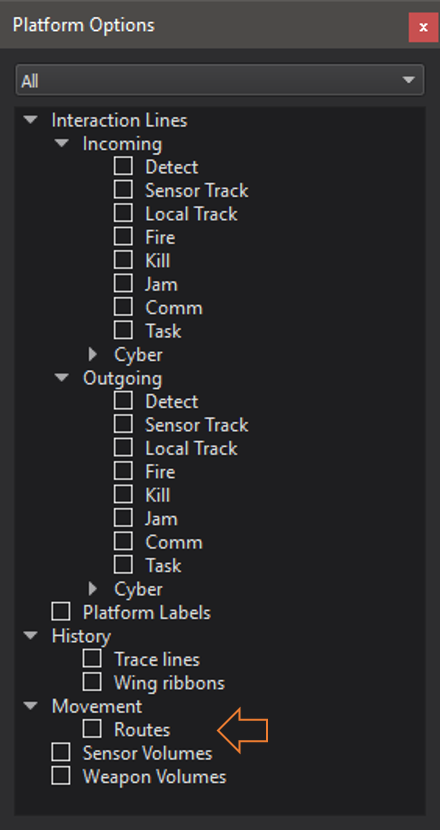
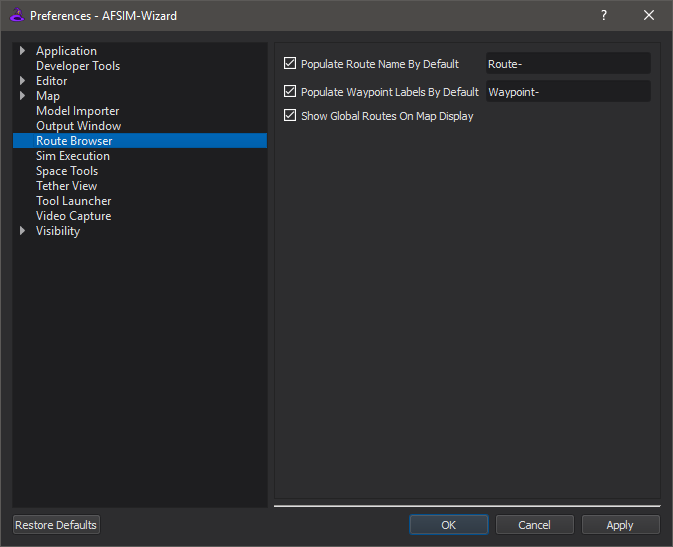

Route Browser - Wizard¶
The Route Browser displays the selected platform’s route and all global routes defined in the scenario.
Note
Upon hitting Apply or OK, changes to routes will be immediately applied to the AFSIM script files they are defined in.
The Route Browser can be enabled from the ‘View’ menu. Selecting a platform will show its route, if it has one, in the Route Browser. If routes are enabled in the Platform Options, a route can be selected by clicking on one of its waypoints in the Map Display. Selecting a route will also populate the Route Browser with the route information.
 The Route Browser also provides a way to edit and create routes.
A user can edit a route by either selecting a route and then clicking the “Edit Route” button at the top of the browser or by right-clicking on the route and selecting the edit option from the menu. This will show a dialog where the properties of each waypoint can be modified. Waypoints can also be added to or removed from the route. To add a waypoint, right-click on the desired adjacent waypoint on the left side of the dialog and select either “Insert Waypoint Prior” or “Insert Waypoint After” from the menu. To delete a waypoint, select “Remove Waypoint” from that same menu. Waypoints can also be added using the location selector button at the top of the dialog. This allows a user to select a location on the Map Display, and a waypoint with that latitude/longitude will be appended to the route. The altitude of the new waypoint defaults to the previous waypoint’s altitude, or 25000 feet if no previous altitude is available. All other waypoint properties are set to Mover Default or remain unset, as applicable.
Waypoint properties that are relevant to the Route Browser include:
Label |
The label that appears next to the waypoint in the Map Display. This is also used as the target of a goto command. |
Latitude |
The latitudinal position of the waypoint. |
Longitude |
The longitudinal position of the waypoint. |
Altitude |
The altitude of the waypoint. If no altitude is specified, the altitude of the previous waypoint will be used. |
Altitude Reference |
The reference for the altitude. Options for this property are MSL, AGL, and Mover Default. |
Go To |
The label of the waypoint to goto next in the route. Options for this property include all waypoint labels defined for the current route. |
Speed |
The speed of the waypoint. If no speed is specified, the speed of the previous waypoint will be used. |
Climb Rate |
The climb rate of the waypoint. If no climb rate is specified, the climb rate of the previous waypoint will be used. |
Linear Acceleration |
The linear acceleration of the waypoint. If no linear acceleration is specified, the linear acceleration of the previous waypoint will be used. |
Radial Acceleration |
The radial acceleration of the waypoint. If no radial acceleration is specified, the radial acceleration of the previous waypoint will be used. The radial acceleration may be specified in one of three ways: radial acceleration, bank angle, or maximum g’s. The desired radial acceleration specification can be selected from the drop-down list. |
Turn Direction |
The turn direction of the waypoint. Options for this property are Left, Right, and Shortest. |
Switch Type |
The switch type of the waypoint. Options for this property are On Passing, On Approach, and Mover Default. |
End Of Path Option |
The property that specifies what happens to the platform when it reaches the last waypoint in its route. Options include Extrapolate, Stop, Remove, and Mover Default. |
While editing a route, any change to a waypoint will be reflected immediately in the Map Display (if routes are enabled). However, to take effect in the simulation, the change must be applied by clicking “Apply” or “OK”.
Note
Route changes will not be applied to the simulation until “Apply” or “OK” is clicked.
The Route Browser also allows a user to create a new global route. The route is considered “global” until it is assigned to a platform.
A new route can be created by clicking on the “New Route” button in the Route Browser. A dialog very similar to the edit dialog will appear, with the addition of a “Route Name” field and a drop-down list to assign the route to a platform, if desired. To add waypoints, use the location selector to select locations on the Map Display. Once at least waypoint is added, additional waypoints can be added by right-clicking on a waypoint and then selecting either “Insert Waypoint Prior” or “Insert Waypoint After”. Waypoints can be removed by selecting the “Remove Waypoint” option. Once the global route is created, it can be selected from the drop-down list in the “Follow Route” section of the Platform Movement window.
A route my be deleted by right-clicking on the route in the Route Browser dock widget and selecting the delete option from the menu.
Platform Options¶
Routes can be shown/hidden from the Map Display through the Platform Options.
Preferences¶
The preferences have options to set and toggle use of a default route name, set and toggle use of default waypoint labels, and a toggle to show/hide global routes on the map.
